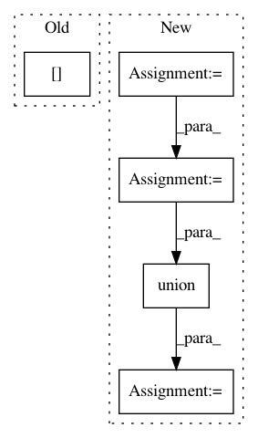

10a0c8fac958e58332f896dcfdad911bddd5d6dd,lib/matplotlib/tight_layout.py,,auto_adjust_subplotpars,#Any#Any#Any#Any#Any#Any#Any#Any#Any#Any#,19
Before Change
for row_i in range(row1, row2 + 1):
hspaces[row_i, col1] += ax_bbox.xmin - tight_bbox.xmin // left
hspaces[row_i, col2 + 1] += tight_bbox.xmax - ax_bbox.xmax // right
for col_i in range(col1, col2 + 1):
vspaces[row1, col_i] += tight_bbox.ymax - ax_bbox.ymax // top
vspaces[row2 + 1, col_i] += ax_bbox.ymin - tight_bbox.ymin // bot.
After Change
[ax.get_position(original=True) for ax in subplots]
for subplots in subplot_list
]
ax_bbox_list = [
Bbox.union([
b for b in bbox_list
if np.isfinite(b.width) and np.isfinite(b.height)
and (b.width != 0 or b.height != 0)
])
for bbox_list in ax_bbox_list
]
for subplots, ax_bbox, (num1, num2) in zip(subplot_list,
ax_bbox_list,
num1num2_list):
In pattern: SUPERPATTERN
Frequency: 3
Non-data size: 5
Instances
Project Name: matplotlib/matplotlib
Commit Name: 10a0c8fac958e58332f896dcfdad911bddd5d6dd
Time: 2020-10-19
Author: brunobeltran0@gmail.com
File Name: lib/matplotlib/tight_layout.py
Class Name:
Method Name: auto_adjust_subplotpars
Project Name: matplotlib/matplotlib
Commit Name: 474a90c50a75b5dbffa6b018ebc0a3a26f689649
Time: 2020-04-30
Author: jklymak@gmail.com
File Name: lib/matplotlib/tight_layout.py
Class Name:
Method Name: auto_adjust_subplotpars
Project Name: rusty1s/pytorch_geometric
Commit Name: 3dbd7b0b33016ba8c492c786ad1ddcd053fc707c
Time: 2018-11-18
Author: matthias.fey@tu-dortmund.de
File Name: torch_geometric/data/batch.py
Class Name: Batch
Method Name: from_data_list